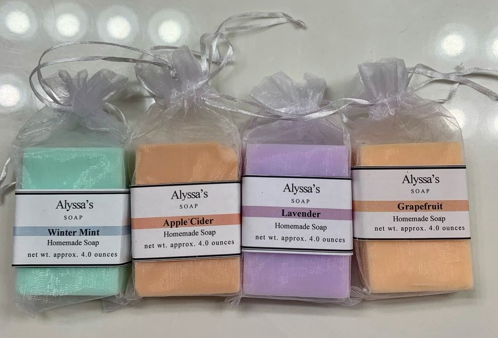

What I do:
I make hand-made soaps using natural ingredients at home.

How I got started:
During the recent pandemic, I suddenly had more free time than I knew what to do with.
I decided to use this time to explore new hobbies, which led to me falling in love with making soap.
About the Business:
When I first started making soap, it was just a new hobby I was enjoying. It was a way for me to spend my idle time. My soap first started to gain attention from family members, some of which became interested in purchasing soap. Some of the family members who purchased soap told friends and coworkers about it, and from there I started to have regular customers. I also started to attend flea markets and sell soap there, and soon I had gathered a customer base and before I knew it I was filling orders and selling soap to multiple regular customers.
How to Order:
The order process is simple, just email me at the email address on the contact page with what you would like to order!
How It's Made:
I make all of my soap right here in my kitchen at home. I use the melt and pour process, so first I cut up chunks of soap base, and melt them. Once they have been melted I add in my fragrance oil and colorant. Next I put the soap into rectangular molds. After that the only thing left to do is to carefully remove them from the molds after about an hour an a half, and place them into bags or wrap them up. I documented the proccess with some pictures below!